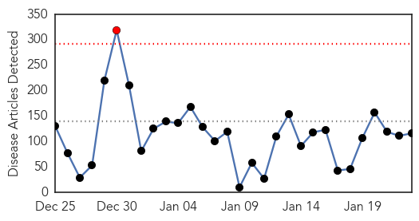
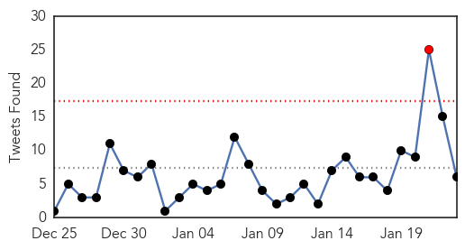
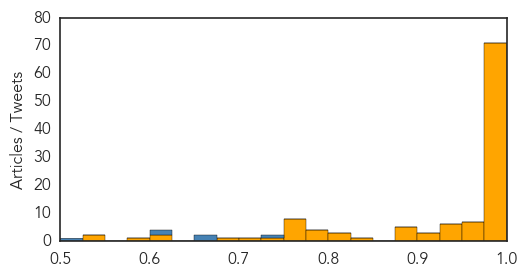
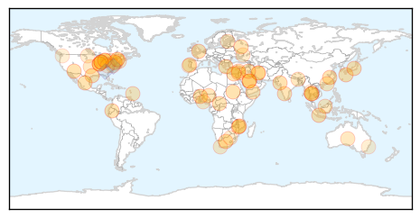

Ebola
30-Day Web Trend
1 alerts, 0 warnings

30-Day Twitter Trend
1 alerts, 0 warnings

Article Locations

Article Confidences
Top Articles:
- 1.000
- Ebola ebbing in West Africa, Liberia cremates 2,800 Ebola bodies - NAN
- 1.000
- United Nations Claim Ebola Epidemic Significantly Slowing, Sierra Leone Schools To Reopen In March, Ebola Health Workers Still Fearful
- 1.000
- Health authorities report 3 new Ebola cases in Liberia, previously declared Ebola free
- 1.000
- Ebola Vaccine Headed to West Africa
- 1.000
- Health authorities report 3 new Ebola cases in Liberia, previously declared Ebola free
- 1.000
- Fight against Ebola has reached a 'turning point'
- 1.000
- Ebola vaccine heads to Liberia for tests even as crisis eases
- 0.999
- UN reports significant drop in Ebola cases
- 0.999
- ‘My dream job to fight Ebola’ - KwaZulu-Natal
- 0.999
- Studies detail Ebola spread, response steps
- 0.999
- #Ebola vaccine set for trial in West Africa
- 0.998
- Ebola Declining but Still a Threat
- 0.998
- How we beat Ebola
- 0.998
- Falling Ebola cases show 'turning point'
- 0.998
- Sierra Leone emergency anti-malaria drive reaches 2.5 million people - TRFN
- 0.997
- Sierra Leone eases blocks on travel, business as Ebola wanes
- 0.997
- ′Victory is in sight′ in the fight against Ebola
- 0.997
- First doses of Ebola vaccine arrive in Liberia ahead of the largest-ever trial, with 30,000 volunteers taking part
- 0.997
- Science Journal: Just 5 Ebola cases left in Liberia
- 0.997
- New Brunswick and federal health officials test Ebola preparedness - New Brunswick
- 0.996
- Ebola 'Turning Point' as Cases Decline
- 0.996
- WHO says cash crunch, rains could thwart Ebola efforts
- 0.996
- Parents Blame Teenage Pregnancy On Water Crisis
- 0.996
- Experimental Ebola Vaccine On Its Way To Liberia For Human Trials
- 0.996
- Ebola Survivor Blood Trial May Move as New Cases in Liberia Wane
- 0.996
- Ebola crisis: Sierra Leone lifts quarantine measures; WHO warns against complacency
- 0.995
- Sierra Leone Lifts Nationwide Ebola Quarantines
- 0.995
- Liberia moves a step closer to Ebola vaccine trials
- 0.995
- UN health agency to hold special weekend session on Ebola; warns against donor fatigue - Sierra Leone
- 0.995
- Kailahun District Clocks 42 Ebola Free Days
- 0.995
- Government of Canada and Government of New Brunswick continue to work together to strengthen domestic preparedness for Ebola
- 0.995
- Just five Ebola cases left in Liberia, government says
- 0.994
- Government of Canada and Government of New Brunswick continue to work together to strengthen domestic preparedness for Ebola - News Press Release
- 0.994
- Ebola decimating Africa’s gorilla and chimpanzee populations, conservationists warn
- 0.994
- Médecins Sans Frontières (MSF) International
- 0.993
- 2 Nurse Dead, As Many Infected of Crimean-Congo Hemorrhagic Fever
- 0.993
- Health officials test preparedness for Ebola outbreak in New Brunswick
- 0.993
- Large-scale Ebola vaccine trial to start in Liberia
- 0.993
- Ebola vaccine trials may face limitations on waning epidemic
- 0.993
- National Ebola Response Update, 23rd January 2015 - Liberia
- 0.993
- Doctor from Ottawa’s CHEO headed to Sierra Leone to join Ebola fight (with video)
- 0.992
- 5 Ebola Cases Left in Liberia
- 0.992
- Fast-tracked Ebola vaccine offers fresh hope
- 0.992
- Endangered Gorillas, Chimpanzees Unseen Victims Of Ebola
- 0.992
- Health chiefs plead for more Ebola funds in final phase of epidemic
- 0.991
- Ebola situation still 'extremely alarming': World Health Organisation, Europe News & Top Stories
- 0.991
- Ebola drugs
- 0.990
- Sierra Leone lifts Ebola quarantine measures amid progress
- 0.989
- Sierra Leone lifts Ebola quarantine measures
- 0.989
- WHO runs low on cash for Ebola but progress key before rainy season
Showing top 50 articles...
Top Tweets:
- 0.729
- RT: @Reuters 2/Ebola Light signals ignored leading 2 postponing int.emergency response when reoccurrence of cases i…
- 0.673
- RT: ALERTE - Ebola: la Sierra Leone annonce la fin de toutes les mesures de quarantaine http://t.co/4m5BHO5khM…
- 0.653
- RT: Ebola data as Jan 23: Guinea +2/+44 Liberia +46/+31 Sierra Leone + 60/+14 per WHO compared to Jan 21 1/2 http://t.…
- 0.607
- Liberia is utilizing Treatment Units & Community Care Centers to slow the spread of Ebola. http://t.co/9qIYj24BIQ
- 0.604
- RT: The NIH is launching Ebola study in Liberia is in talks with Sierra Leone. Glaxo ships its vaccine. My story http…
- 0.501
- Community health monitors being trained to detect report Ebola trigger events in Sierra Leone. http://t.co/F8ORoliP79
Unknown
30-Day Web Trend
0 alerts, 0 warnings

30-Day Twitter Trend
2 alerts, 0 warnings

Article Locations
Article Confidences
Top Articles:
- 0.989
- CSU researchers investigate dangerous MERS virus Rocky Mountain Collegian
- 0.977
- Benin Lassa fever outbreak declared over
- 0.945
- Seattle Superbug: Untreatable Virus 'Carbapenem-Resistant Enterobacteriaceae' Sickens Dozens Across City : News : Headlines & Global News
- 0.920
- Number of flu-related deaths in NM jumps to 12
- 0.917
- Chicago Tribune
- 0.917
- Chicago Tribune
- 0.917
- Chicago Tribune
- 0.917
- Chicago Tribune
- 0.917
- Chicago Tribune
- 0.917
- Chicago Tribune
- 0.917
- Chicago Tribune
- 0.917
- Chicago Tribune
- 0.917
- Chicago Tribune
- 0.917
- Chicago Tribune
- 0.917
- Chicago Tribune
- 0.917
- Chicago Tribune
- 0.917
- Chicago Tribune
- 0.917
- Chicago Tribune
- 0.917
- Chicago Tribune
- 0.917
- Chicago Tribune
- 0.917
- Chicago Tribune
- 0.917
- Chicago Tribune
- 0.917
- Chicago Tribune
- 0.917
- Chicago Tribune
- 0.917
- Chicago Tribune
- 0.914
- Health officials seek Lower Sackville students at risk for infection
- 0.895
- Michigan child dies from influenza
- 0.890
- Egypt reports 8th bird flu death in 2015
- 0.873
- Superbug spread through contaminated scopes sickened dozens in Seattle
- 0.866
- Five Lebanese soldiers killed in clashes near border with Syria
- 0.866
- U.S. says "not clear" if Iran exerting control over rebels in Yemen
- 0.866
- French woman kidnapped in Central Africa released
- 0.866
- Ukraine separatist leader won't seek ceasefire talks
- 0.866
- THAILAND PRESS-Corruption at lowest level in 5 years, says survey
- 0.856
- DK, Udupi account for 50% of malaria cases
- 0.837
- The Portugal News
- 0.792
- FG’ll Contain Bird Flu -Minister
- 0.783
- Israel and Barbados discuss health initiatives -- NationNews Barbados -- Local, Regional and International News nationnews.com
- 0.740
- Kala-azar now a notifiable disease
- 0.739
- HPV vaccine safe, says health ministry
- 0.738
- Hospital capacity to be reviewed
- 0.738
- Indiana flu deaths rose by 12 last week to 97 total
- 0.728
- Health Ministry Approves HPV Vaccine As Safe
- 0.711
- Travelers Using Antibiotics May Be Contributing to Global Spread of Superbugs
- 0.688
- Malawi Floods: 20,000 people stranded
- 0.687
- Travelers’ diarrhea antibiotics may bring greater risk for ‘superbug’ spread: Study
- 0.684
- Michigan records first child flu death of the year
- 0.665
- World’s most popular banana faces eradication by deadly fungus — RT News
- 0.665
- Many U.S. Girls Aren't Getting HPV Vaccine, Study Finds
- 0.661
- Tuberculosis patient worked at school and day care while contagious
Showing top 50 articles...
Top Tweets:
- 0.587
- RT: FluFactFriday: It’s common for different flu viruses to circulate later in the season. Fluvax protects against 3 or 4 flu viru…
- 0.577
- FluFactFriday: It’s common for different flu viruses to circulate later in the season. Fluvax protects against 3 or 4 flu viruses.